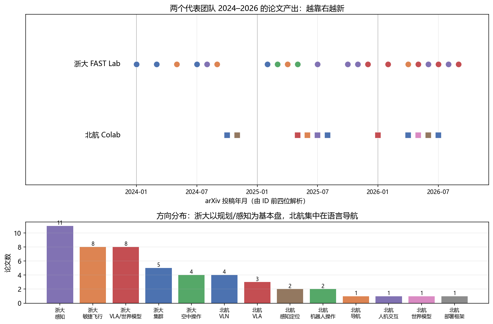

最新进展与团队追踪：2025–2026 的无人机世界模型 / VLA¶
预计阅读：28 分钟 | 前置知识：已完成基础概念学习（Part 1-4）
为什么"按团队读"¶
前三篇讲的是怎么读一篇论文、有哪些空白。这一篇换个角度：追团队。
理由很实际。前沿论文是零散出现的，但问题意识是按团队延续的 —— 一个组今年做的四篇论文，往往在回答同一个问题，只是每次换一个角度。你追一个组，等于一次拿到四篇的上下文；你追一百篇零散论文，得到的是没有主线的列表。
而且追团队能让你提前看到下一步。一个组把某个方向的开源库维护了五年，他们的下一篇大概率还在这里；反过来，一个组今年突然在某个新方向连出三篇，说明那里刚被验证可行 —— 这两种信号，单看某一天的 arXiv 列表都读不出来。
下面先解剖两个有代表性的组：浙大高飞团队（从几何规划器一路做到具身智能，是"经典派转过来"的样本）和北航 Colab（多模态视觉组切入低空，是"AI 派压过来"的样本）。然后跳出这两个组，看整个版图在收敛到什么共识上。
关于本文的可靠性：文中共出现 48 个不同的 arXiv 号，2026-09 全部通过
export.arxiv.org的 API 逐条 resolve 成功，标题、作者、摘要均为该 API 直接返回。具体的数字分两档：带引号的量化结论我都读了摘要原文（并在下文注明出处）；转引自二手综述、我没能读到原文的，另行标注"—（未核实）"。会议/期刊归属以正式论文集为准，预印本信息可能后续变更。一条先行的警告：这个领域的 AI 生成摘要不可信。我核对时发现，某搜索结果把 FlyMirage（2605.19600）的作者列表安到了另一篇毫不相干的论文头上 —— 两篇论文、不同国家、不同作者，只是名字里都有 "飞"。任何你没有亲自 resolve 过的 arXiv 号，都当它是错的。
一、浙江大学 FAST Lab（高飞 / 许超）¶
1.1 这个组是谁¶
浙江大学控制科学与工程学院，另有湖州研究院的编制。高飞（长聘副教授/研究员）、许超（教授级 PI，湖州研究院院长）。GitHub 组织 ZJU-FAST-Lab，70 个公开仓库。
它在这个领域最广为人知的成果是微型无人机集群：2022 年 Science Robotics 封面文章 "Swarm of micro flying robots in the wild"（一作周鑫，通讯高飞、许超）。更早的 EGO-Planner（RA-L 2021）和 Fast-Drone-250 两个仓库至今仍是很多无人机课程实验的默认选项 —— 前者 2600+ 星，后者 2500+ 星。
1.2 三条研究线¶
这个组的产出可以按"离飞行器有多远"分成三层：
顶层 具身智能化（2025–2026 明显加速）
├─ 强化学习端到端飞行：Flying on Point Clouds、Safety-Shielded RL、AgilePE
└─ 生成式世界模型与 VLA：FlyMirage、NavDreamer、NavGen、TADreamer、VLA-AN
↑ 本文重点
中层 感知—规划—控制的闭环系统化
把底层那套规划器塞进越来越难的场景：LiDAR 感知规划、旋翼失效容错、
空地协同无全局定位避障、陆空双模态车、全驱动/可变形新平台
↑ 共同主题：去掉对 GPS / SLAM / 先验地图的依赖
底层 可证明的最优与安全轨迹规划
Teach-Repeat-Replan → EGO-Planner/Swarm → GCOPTER → FIRI → Primitive-Swarm
↑ 特征：坚持几何/动力学可解释，用凸优化 + MINCO + 微分平坦做机载实时规划
底层是这个组的"看家本领"，也是它的代码库被广泛复用的原因。注意它的方法论取向：不接受端到端黑箱，坚持在最优化框架里给出可行性与安全性的证明。这个取向会直接决定他们在顶层怎么做世界模型 —— 见下。
1.3 一个关键判断：这个组怎么做"世界模型"¶
这是本文最值得记住的一段。
2025 年之后，这个组出了一串带 "world model" 字样的工作：FlyMirage、NavDreamer、NavGen、TADreamer。但它们不是 Part 2 讲的那种世界模型。
Part 2 讲的路线（Dreamer / RSSM / TD-MPC）是：学一个隐空间的动力学模型，在里面做 rollout —— 世界模型是被策略"用"的、内生的。
这个组走的是另一条：把视频生成模型当作零样本导航器和数据引擎。典型流程是：
语言指令 + 当前视角
↓
视频生成模型（如 Wan / Marble 3DGS）想象"往前飞会看到什么"
↓
Qwen3-VL 打分，挑出最符合指令的那条想象
↓
π³ 逆动力学解码出航点；MoGe2 恢复米制尺度
↓
Ego-Planner 兜底，规划出保证安全可行的轨迹
↓
执行
关键在最后一步：生成模型只负责"出意图"，安全性交给几何规划器。这和他们底层十几年的积累是一脉相承的 —— 神经网络可以提建议，但能不能飞由可证明的规划器说了算。
其中 FlyMirage（arXiv:2605.19600）最能代表这个组的思路：LLM 当场景设计师 → 生成式世界模型把设计实例化成照片级 3DGS 场景 → 自动探索与语义标注 → 动力学可行的规划器生成轨迹。该工作的题目就是 A Fully Automated Generation Pipeline for Diverse and Scalable UAV Flight Data via Generative World Model——它只建数据生成管线，论文没有报告下游策略微调的结果，也没有真机验证。这里世界模型的产出不是控制器，是训练集。
对做研究的读者的含义：这个组把"动力学建模"这块整个让给了经典规划器。代价是它拿不到回报估计 —— 生成式路线能告诉你"往前飞大概会看到什么"，但给不出"这个状态值多少分"，所以没法直接做 model-based RL。
但请注意：这恰恰是 2026 年整个领域正在攻的方向，而且已经有了名字 —— World-Action Model（WAM，世界-动作模型）。它不是"世界模型 + 策略"两个模型拼起来，而是一个模型同时预测隐空间未来状态并从中解码动作。见第三节 3.1。空白不在"有没有人做"，而在"做到什么程度算解决" —— 目前还没有公认的判据。
1.4 2025–2026 代表工作¶
| arXiv | 工作 | 方向 | 一句话 |
|---|---|---|---|
| 2512.15258 | VLA-AN | VLA | 机载 VLA 导航框架，带几何安全校正层 |
| 2602.00708 | USS-Nav | 导航 | 统一时空场景图的轻量零样本目标导航 |
| 2602.09765 | NavDreamer | 世界模型 | 视频模型当零样本 3D 导航器 |
| 2605.19600 | FlyMirage | 世界模型 | 生成式世界模型自动造 UAV 飞行数据 |
| 2606.02313 | Expert-Guided GRPO | VLA | 用专家引导的 GRPO 对齐飞行意图 |
| 2607.29009 | D-VLC | 多机 | 异构多机器人去中心化视觉语言协作 |
| 2609.19824 | TADreamer | 世界模型 | 陆空双模态零样本语言导航 |
| 2609.30770 | NavGen | 世界模型 | 视觉生成模型当具身导航数据引擎 |
| 2604.05828 | Precise Aggressive Maneuvers | 敏捷飞行 | Science Robotics 2026，传感器运动策略 |
| 2602.08653 | Safety-Shielded RL | 敏捷飞行 | 安全滤波器 + RL 的高速视觉飞行 |
| 2608.14135 | AgilePE | 敏捷飞行 | 自博弈 RL 做追逃 |
| 2502.16887 | Primitive-Swarm | 集群 | 超轻量大规模集群规划器（T-RO 2025） |
| 2403.02977 | FIRI | 规划 | 凸无障碍区域快速膨胀（T-RO 2025） |
| 2503.00785 | FLOAT Drone | 空中操作 | 全驱动同轴空中机器人 |
| 2505.15010 | Shape-Adaptive Quadrotor | 空中操作 | 可变形四旋翼的规划与控制 |
另外两项不属于 arXiv 但分量更重，值得单独记：
- "Unlocking aerobatic potential of quadcopters" —— Science Robotics 2025，特技飞行自主生成与执行。人机对比的数字很直观：自主系统穿越六道 1.2 米门 100% 通过，顶尖人类飞手 12.5%。
- HI-ARM —— Nature Communications 2026，带机械手的自主飞行机器人，做空中抓取与交互。
1.5 开源资产¶
想上手的话，这几个仓库的性价比最高（星数为 2026-09 前后量级）：
| 仓库 | 星数 | 用途 |
|---|---|---|
ego-planner |
2.6k | 入门机载规划的标准起点 |
Fast-Drone-250 |
2.5k | 一整套可复现的自主飞行硬件方案 |
ego-planner-swarm |
2.2k | 集群规划 |
GCOPTER |
1.3k | 几何约束轨迹优化 |
Aerobatic-Planner |
160 | SR 2025 特技论文的代码 |
Terrestrial-Aerial-Navigation |
110 | 陆空双模态导航 |
1.6 避坑：四处常见的张冠李戴¶
这几条在中文二手资料里流传很广，进组之前先对齐：
- "Champion-level drone racing"（Nature 2023, Swift）不是浙大的，是苏黎世大学 Scaramuzza 团队。浙大在竞速方向的实际产出是 RA-L 2021 的 Fast-Racing 开源基线 + 2022 年国内赛事冠军 + SR 2025 的特技飞行，没有 Nature/Science 级的竞速论文。
Fast-Planner不是这个组的仓库（属 HKUST 的 Boyu Zhou）。因为高飞博士毕业于 HKUST，这两者常被误挂到一起。- USS-Nav 不是"Nature 子刊"。中文自媒体把 Nature Communications 上的 HI-ARM 和 USS-Nav 打包宣传，但 USS-Nav 在 arXiv（2602.00708）之外没有任何期刊记录。
- arXiv:2405.07736 与 RA-L 2025 的同一工作标题不同（arXiv 版叫 "Learning to Plan Maneuverable and Agile Flight Trajectory..."，期刊版叫 "Dynamically Feasible Trajectory Generation..."）。引用时二选一，不要拼在一起。
二、北京航空航天大学 Colab（刘偲）¶
2.1 这个组是谁¶
北京航空航天大学人工智能学院的 Colab 实验室（口语里也叫"可乐实验室"），PI 是刘偲教授（IEEE T-PAMI 副主编）。实验室主页 colalab.net，GitHub 组织 buaa-colalab，另有一个低空方向的专门页面 Colab UAVs。
先明确它的性质：这是一个计算机视觉 / 多模态内容理解组，具身智能（学生条目里叫"空天具身智能"）是应用线之一。它不是飞控组，也不做低层控制。
这一点决定了它的技术取向，也是理解它所有无人机论文的钥匙 —— 你在这个组的工作里不会看到串级 PID 或微分平坦，但会看到大量语言、视觉、推理、数据集和基准。他们切入无人机的方式，是把语言变成无人机的接口。
2.2 以"语言"为核心的导航栈¶
从 2024 到 2026，这个组的无人机论文连起来是一条很清晰的线：
2024-10 OpenUAV 先造平台和基准（不开源就没人跟你比）
2025-05 UAV-Flow Colosseo 把任务定义清楚：Flying-on-a-Word
2025-08 AeroDuo 双高度协同：高空想、低空飞
2026-06 FLIGHT 细粒度 + 长时程，慢 VLM 配快扩散策略
2026-07 Parse-Search-Confirm 免训练的对话式导航
一条从"造基础设施"到"做系统"的推进路径。其中两步有特殊意义：
UAV-Flow Colosseo（arXiv:2505.15725）定义了 Flying-on-a-Word 任务 —— 短距离、语言条件的精细控制（不是"飞到 A 点"，而是"从窗户和树之间穿过去"）。它同时给出了第一个真机基准和数据集，并对比了 VLN 与 VLA 两条范式，报告了首次真机部署的语言引导 VLA 控制。本仓库 Part 3 的 03-语言条件飞行控制 讲的就是这项工作 —— 你读的那一节的实验，其任务定义者就是这里。
FLIGHT / Think Like a Pilot（arXiv:2606.06836）代表了这个组最新的架构取舍：异步的"慢 VLM + 快扩散策略"，外加显式的"飞行员推理"文本做监督。这个"慢想快做"的分工和上面浙大的"生成模型出意图 + 规划器兜底"是同一个思路的两种实现 —— 都在回答大模型的推理速度配不上飞行控制频率这个共同难题。
2.3 代表工作¶
低空无人机方向：
| arXiv | 工作 | 一句话 |
|---|---|---|
| 2410.07087 | OpenUAV | 照片级 UAV 飞行仿真平台 + 1.2 万条轨迹数据集 + UAV-Need-Help 基准 |
| 2505.15725 | UAV-Flow Colosseo | 定义 Flying-on-a-Word 任务，首个真机基准 |
| 2508.15232 | AeroDuo | 双高度协同 VLN，HaL-13k 数据集（13,838 条轨迹） |
| 2507.04430 | AirStar | 语音 + 手势驱动的空中具身助手（无遥控器） |
| 2604.17190 | LookasideVLN | 用"侧视"方向线索做航空 VLN，对标 CityNavAgent 且更省算力 |
| 2606.06836 | Think Like a Pilot（FLIGHT） | 细粒度长时程 VLN 基准 + 异步慢 VLM / 快扩散策略 |
| 2607.11529 | Parse, Search, and Confirmation | 免训练对话式航空导航，配结构化空间记忆 |
| 2411.13610 | Video2BEV | 无人机视频 → 鸟瞰图，做跨视角地理定位 |
| — | AerialVLA | 端到端对话导航，自己决定何时提问（AAAI 2026，无 arXiv 版） |
相邻的通用具身方向（同一组，非无人机）：OctoNav（arXiv:2506.09839，CVPR 2026，通用导航基准 + Think-Before-Action 的 VLA 式 MLLM）、ACoT-VLA（arXiv:2601.11404，CVPR 2026，把推理链直接放进动作空间）、RoboCerebra（arXiv:2506.06677，NeurIPS 2025 D&B，长时程操作基准）、GE-Sim 2.0（arXiv:2605.27491，闭环视频世界模拟器）。
2.4 避坑：三条¶
- 两个 AerialVLA 不是一回事。 这个组的 AerialVLA 发在 AAAI 2026，没有 arXiv 预印本；arXiv 上确实存在一个叫
AerialVLA的条目（2603.14363），但那是另一个组的工作。这两篇撞名的程度很高，值得把区别记清楚：
| 北航 Colab 的 AerialVLA | arXiv:2603.14363 的 AerialVLA | |
|---|---|---|
| 作者 | 刘偲组（AAAI 2026） | Peng Xu, Zhengnan Deng, Jiayan Deng, Zonghua Gu, Shaohua Wan |
| 方法核心 | 对话导航，自己决定何时提问 | 极简端到端，双视角感知 + 模糊方向提示，3-DoF 连续控制 |
| 评测 | 对话式导航任务 | TravelUAV 基准 |
另外有二手来源称 2603.14363 在 ECCV 2026 上改名成了 "AeroVLA"（未核实——我没能访问 ECCV 2026 的正式论文集）。若属实，同一篇论文在 arXiv 和会议录里就是两个名字。无论属实与否，结论都一样：检索时认作者单位和年份，不要认名字。 2. 会议归属以正式论文集为准。 LookasideVLN 与 ACoT-VLA 的 CVPR 2026 在 CVF 开放获取里已能查到，可信；FLIGHT 和 Beyond 2D Matching 的会议归属尚无第三方来源（未核实），引用时写 arXiv 更稳妥。 3. AirStar 的 ACM MM 2025 Demo 由实验室主页自述（未核实），ACM 数字图书馆在本环境访问受限，未能独立确认。
三、更大的版图：世界-动作模型（WAM）成为主流¶
跳出这两个组看全局。如果只记住 2026 年的一件事，应该是这个：世界模型和策略正在合并成一个模型。
3.1 从"两个模型"到"一个模型"¶
2025 年的做法是把世界模型并排放在策略旁边 —— 世界模型负责"想象"，策略负责"决策"，两者各训各的。
2026 年 5 月之后，主流变成了一个模型同时干两件事：预测隐空间的未来状态，再从它解码出动作。这个范式有了统一的名字：World-Action Model（WAM）。代表工作有 WorldVLN、ForeFly、DroneWAM、AeroAct、ImagineUAV、WAM-Nav。
为什么这个变化重要：它正面回答了 1.3 节留下的问题 —— "能不能既做 rollout 又给语义"。把动作解码器直接挂到未来状态预测上，回报估计就不再需要单独学一个 value head。但这是不是真的解决了问题，目前没有定论 —— 这类工作普遍只有成功率的提升，没看到谁把"想象出的回报"和真实回报做过系统性对比。这正是值得做的题。
3.2 三个正在收敛的技术判断¶
判断一：latent 战胜 pixel。
这是最明显的一次集体转向。Part 2 讲的"生成式世界模型"默认要生成图像/视频；2026 年的新工作刻意避免生成图像：
- Skytopia（arXiv:2609.26007）走得最远 —— 它的论点是：策略需要的是世界模型产生的表征，不是它的预测。因为飞行中帧间变化几乎完全由已执行的动作解释，预测退化成"在已知位移下重投影静态场景"。于是它在部署时直接扔掉预测器，省掉 59.4% 的推理开销。一个策略同时支持点目标、图像目标和自由导航，装到真机上不用微调。
- DroneWAM（arXiv:2609.33148）明确选 JEPA 架构，就是为了不生成图像。
- WorldVLN（arXiv:2605.15964）预测短时程隐状态转移，而不是生成整段视频。
判断二：世界模型的价值在"造数据"，不在"做规划"。
FlyMirage 是最干净的例证（见 1.3）。AeroManip-VLA（arXiv:2609.36915）在空中操作上做同样的事：用 RL 生成示范，喂给下游策略。这个转向的潜台词是：仿真器的瓶颈不是物理精度，是场景多样性 —— 而生成模型恰好擅长造多样性。
顺带一个可用的量化锚点：GRaD-Nav++（arXiv:2506.14009，Stanford，一作 Qianzhong Chen）给出了 sim-to-real 的分项数字 —— 注意它不是一个数，而是两对：
| 任务类型 | 仿真成功率 | 真机成功率 | 落差 |
|---|---|---|---|
| 训练过的任务 | 83% | 67% | −16 |
| 没见过的任务 | 75% | 50% | −25 |
（多环境适配那组：仿真均值 81% → 真机均值 67%，−14。）"sim-to-real 掉约 16%"这个常被引用的说法，只是训练任务那一行。 泛化到没见过的任务时落差接近 1.5 倍 —— 这提示一件事：仿真里"泛化好"这件事本身在真机上最不可信。
判断三：RL 后训练成了标配。
SFT 之后必须再上 RL，已经从"加分项"变成"默认流程"：Expert-Guided GRPO（arXiv:2606.02313）、RefineFly（arXiv:2608.09467）、WorldVLN 里的 Action-aware GRPO。共识是纯 SFT 不足以支撑闭环飞行 —— 这一点和本仓库 Part 3 的实验结论（模仿损失低 ≠ 闭环飞得好）是同一件事的两种说法。
3.3 一个新现象：无人机制造商开始发论文¶
这一条值得单独说，因为它是领域成熟的信号。
2026 年出现了消费/工业无人机厂商直接参与研究的情况：
- Autel Robotics（道通智能） —— 发布低空 VLA 的路线图综述（arXiv:2604.13654），并做了 CosFly-VLA（arXiv:2607.15004）。一家无人机制造商来写领域路线图，商业意图很明确。
- ACE Robotics（大晓机器人） —— ACE-Brain-0（arXiv:2603.03198），8B 空间智能基础模型，拉上上交、南洋理工、港中文等一起开源。宣称在 24 个基准上拿到 19 个 SOTA（厂商自述，未独立验证）。许可证类型（"MIT 许可"）与"19/24 SOTA"这两个数字，论文与官方页面都未能核实，引用前请复核原始发布页。
- 小米汽车参与 FutureNav（arXiv:2606.30367）；Differential Robotics 参与 FlyMirage；CowaRobot 参与 DroneWAM。
缺席名单同样清楚：没有找到 Google DeepMind、NVIDIA、Meta、OpenAI 专门针对无人机世界模型的工作。 NVIDIA 的 Cosmos 被当作通用底座引用，但在这个窗口里没有被用到无人机上。
3.4 一个方法论危机：基准碎片化¶
这一条对我们读论文的人有直接影响。
2026 年的两篇综述（arXiv:2604.13654、2604.07705）明确把基准碎片化列为这个领域的核心方法论问题。现在同时存在的 UAV 导航/世界模型基准至少有：TravelUAV、UAV-Flow、FLIGHT、UAV-Track、AirNav、SatNav、HUGE-Bench、AeroVerse、SpatialUAV、MotionScape……
问题在于它们的协议互不兼容，导致两个后果：
- 论文之间的数字没法直接比。 "A 方法成功率 61.76%，B 方法 57.8%" 这种比较，如果不在同一个基准上，是没有意义的 —— 而二手报道经常这么比。
- "SOTA" 这个词在这个领域目前是失灵的。 看到 SOTA 先问一句：在哪个基准上、跟谁比、是不是同一个评测协议。
给你的实际建议：读一篇 UAV VLN 论文时，第一件事是找它的评测基准，第二件事是看有没有在别人的基准上也报数。只在自己的新基准上刷分的论文，可比性要打个问号。
3.5 谁在做：一份不完全名单¶
除了上面两个组，2026 年 aerial world model / VLA 的主要力量：
| 机构 | 代表工作 | 备注 |
|---|---|---|
| 清华大学 | WorldFly、WorldVLN、AirDreamer、AirScape、FutureNav | 这个方向最活跃的机构之一，散在 SIGS / AIR / 自动化系等多个组 |
| 中科院自动化所（CASIA） | ForeFly、AIR-VLA、UAV-Track VLA | 导航子方向存在感最强 |
| 北京理工大学 | MAD、AeroAct | 同一作者在具身无人系统全国重点实验室连出两篇 |
| 东南大学 + 紫金山实验室 | AutoFly（ICLR 2026） | 少见的 ICLR 正刊接收 |
| 南洋理工大学 | Skytopia | 表征派代表作 |
| 香港科技大学（广州） | SatNav（NeurIPS 2026 D&B） | 用卫星影像绕开 3D 资产成本 |
| 德国帕德博恩大学 / 奥地利克拉根福大学 / 中佛罗里达大学 / 墨尔本大学 | Exp2VLA、Cloud-Edge-or-Split、Aero-World、HUGE-Bench | 非中国团队的代表 |
这张表的读法：机构归属取自论文的作者单位，未逐条核实。其中 AirDreamer（清华 AIR）、SatNav（NeurIPS 2026 D&B）、AutoFly（arXiv:2602.09657）、HUGE-Bench（arXiv:2603.19822）已单独核过；其余格子（如 CASIA / 北理工 / 南洋理工 / 港科大广州的对应关系）属按作者单位推断，请当作线索而不是定论。
用这张表要注意方法：上面两个组（浙大 FAST Lab、北航 Colab）是一个组打一个方向，所以"追团队"有效。清华不适用这条 —— 它的产出散在好几个互不统属的组里，追"清华大学"等于追了个校名。对这类机构，得下钻到 PI 一级再追。
这也是判断该"追团队"还是"追人"的一条简单规则：看这个机构的论文是不是同一个通讯作者。 是，就追团队；不是，就追人。
四、从这些线能读出什么¶
4.1 三个判断¶
判断一：世界模型与策略正在合并，但"合并之后是否真的能算回报"仍是开放的。 WAM 在架构上把两者统一了（3.1），这是 2026 年最大的结构性变化。但统一架构 ≠ 解决了回报估计 —— 我没有看到任何一篇把"模型想象的回报"和"真实回报"做系统性对比的工作。这是一个具体的、可做的题。
判断二：语言导航已经是低空无人机最大的论文产出方向，而且竞争已经白热化。 上面两个组的清单里，"语言 / VLN / VLA" 占比都不低；放到全局，2026 年光新的 UAV VLN 基准就有五六个。对新进入者来说，"再做一个 VLN 基准"的边际价值已经很低了 —— 除非你解决的是碎片化本身（统一协议、跨基准评测）。
判断三："安全兜底"是所有组的公约数。 浙大用几何规划器和安全滤波器，北航用显式推理链 + 分层架构，VLA-AN 用几何安全校正层。没有人让神经网络单独决定飞不飞。 这一点对做真机的人尤其重要：你的架构里必须留出这一层。
4.2 与本仓库既有判断的对照¶
02-研究空白与机会.md 写过"无人机专属世界模型匮乏"，理由是该综述引用的 40+ 篇论文里只有 2-3 篇聚焦无人机。这个理由已被证伪：arXiv:2605.00080 全文检索 UAV / drone / aerial 命中数为 0，它压根没有纳入无人机专属世界模型，而不是"纳入了少数"。结论方向没错，但论据要换成下面这些实查到的论文。
| 说法 | 现在是否成立 |
|---|---|
| "无人机专属世界模型匮乏" | 需要修正。2025 年底之后已密集出现（FlyMirage、NavDreamer、NavGen、TADreamer、Skytopia、DroneWAM、ANWM、AirScape…） |
| "无人机专属世界模型在某个子方向上匮乏" | 成立。见下 |
| "缺少多机协同的世界模型" | 仍然成立。2026 年综述明确指出：目前所有 VLA 方法都是单机的，没有一个解决多无人机协同决策 |
至于子方向，按 3.2 的两条路线分开看：
- 生成式视频 / 生成式数据引擎路线 —— 已经不匮乏，2026 年很拥挤。
- 隐空间动力学路线（Part 2 讲的 Dreamer/RSSM 那种）—— 仍然稀缺。现有工作里 Dreaming Falcon（arXiv:2511.18243）让模型预测力和力矩而不是像素，MAD（arXiv:2606.04534）让隐状态重建机器人中心的占据与可见性栅格而不是图像，都属于少数派的修正尝试。这是本仓库读者最容易切入的空白 —— 而且现在有明确的负面结果可以当起点。
值得单独说 Dreaming Falcon：它把四旋翼当自由刚体，世界模型预测净力与力矩，再经 6-DOF Runge-Kutta 积分器（RK4）推出未来状态。这个物理先验的设计很干净，但论文报告的结论是负面的 —— 原文摘要原话是：两种世界模型（物理先验版和标准 RNN 版）在训练数据上都表现良好，但都无法泛化到新轨迹，导致状态 rollout 快速发散、策略无法收敛。
把物理先验塞进世界模型，并没有解决"无人机世界模型泛化不了"这件事。 这比"这里有一片空白"有价值得多 —— 它告诉你哪条路已经有人试过并且没走通。想切入这个方向，起点是这篇的失败，而不是从零开始。
也就是说，"匮乏"要按路线分开说，不能再笼统讲。这正是追踪团队才能得到的修正 —— 单看综述的引用列表，这些新工作还没进来。
五、动手：自己追踪一个团队¶
5.1 三个入口¶
| 入口 | 怎么用 |
|---|---|
| arXiv API | https://export.arxiv.org/api/query?id_list=<逗号分隔的ID>&max_results=100 —— 批量拿权威标题、作者、日期。注意必须走 HTTPS，HTTP 会失败 |
| 实验室主页 | 论文页通常比 arXiv 更新得早（录用未挂 arXiv 的会先出现），但可能有宣传性表述 |
| GitHub 组织 | 看仓库的更新时间和 star 增长，比看论文更能判断"哪个方向真的有人在用" |
5.2 跑一下追踪脚本¶
code/d_track_papers.py 把上面两个团队的论文清单固化下来，做两件事：从 arXiv 号前四位解析投稿年月画时间线；可选地联网核对元数据。
实测输出（2026-09，字体 Microsoft YaHei）：
【浙江大学 FAST Lab（高飞 / 许超）】共 36 篇
分年度: 2024年 8 篇 2025年 11 篇 2026年 17 篇
分方向: 感知 11 敏捷飞行 8 VLA/世界模型 8 集群 5 空中操作 4
【北京航空航天大学 Colab（刘偲）】共 15 篇
分年度: 2024年 2 篇 2025年 5 篇 2026年 8 篇
分方向: VLN 4 VLA 3 感知定位 2 机器人操作 2 导航 1 人机交互 1 世界模型 1 部署框架 1
加 --verify 时，51 个 ID 全部命中（下面是逐条核对的前五行，标题按 78 字符截断，完整 51 行在本地运行时输出）：
【联网核对】向 arXiv API 查询 51 个 ID ...
命中 51/51
逐条核对（本地短标题只是备注，不做严格比对；这里看的是权威标题）:
2401.07784 [集群] Certifiable Mutual Localization and Trajectory Planning for Bearing-Based Robo
2403.02977 [集群] Fast Iterative Region Inflation for Computing Large 2-D/3-D Convex Regions of
2403.04586 [敏捷飞行] Learning Speed Adaptation for Flight in Clutter
2403.13455 [集群] FACT: Fast and Active Coordinate Initialization for Vision-based Drone Swarms
2405.07736 [敏捷飞行] Learning to Plan Maneuverable and Agile Flight Trajectory with Optimization Em
这一步的价值在"命中 51/51" 之外：真正要看的是每一行的标题和你记忆里的是不是一回事。下面 5.3 节就是被这一步抓出来的例子。

时间线上有一个信号：浙大 FAST Lab 的 VLA/世界模型方向，全部出现在 2025-12 之后。一个做了十五年几何规划器的组，最近一年才切入这条线 —— 这本身就说明了这个方向现在的吸引力。
5.3 一条经验：先核对元数据¶
追踪团队时最容易出错的地方不是判断，是元数据。整理本仓库时踩到的真实例子：
- π₀.₅ 的 arXiv 号写成了
2502.01494—— 这个号确实存在，但它是一篇流体力学论文（"Instantaneous convective heat transfer at the wall"），和机器人毫无关系。正确的号是2504.16054。 - VLA-AN 的标题在三个文件里有三种写法，其中一种（"Adaptive Safety Correction"）是把论文里的模块名当成了标题。权威标题是 "An Efficient and Onboard Vision-Language-Action Framework for Aerial Navigation in Complex Environments"。
- UAV-TrackVLA 在正文四处标 2025，但它的 arXiv 号
2604.02241说明是 2026 年 4 月 —— 年份和 ID 自相矛盾，肉眼很难发现。
这三个错误都不是理解问题，是没核对。而且它们揭示了更根本的一点：YYMM.xxxxx 这个编号本身就带着日期。任何"年份"和"arXiv 号前四位"对不上的地方，一定是其中一个错了 —— 这条自检规则能免费抓出一大批错误。
所以养成一个习惯：任何 arXiv 号进正文之前，批量拉一次 API 对标题。这正是 --verify 那一小节在做的事，一分钟能省掉后面很久的返工。
延伸阅读¶
02-研究空白与机会.md—— 本文 4.2 节修正的那份空白清单../02-世界模型专题/03-模型强化学习世界模型.md—— Part 2 讲的隐空间动力学路线，与本文 1.3、3.2 对照阅读../03-VLA专题/03-语言条件飞行控制.md—— UAV-Flow / Flying-on-a-Word 的详细解读../06-论文导读合集/world-model-papers.md—— 本文提到的部分工作的论文卡片code/d_track_papers.py—— 追踪脚本完整源码
思考题¶
-
实验设计：3.1 节指出 WAM 把世界模型和策略合并成了一个模型，但"没有看到谁把想象出的回报和真实回报做过系统性对比"。请设计一个实验来验证 WAM 的隐空间预测是否真能当回报估计用 —— 你需要哪些基线？怎么排除"性能提升其实来自更大的模型"这个混淆因素？
-
审稿人视角：3.4 节说基准碎片化被两篇 2026 年综述列为核心方法论问题。如果一篇论文只在作者自己新造的基准上刷到了 SOTA，你会要求作者补充什么？请写出一份具体、可执行的要求清单。
-
方法迁移：1.3 节说浙大 FAST Lab 把"动力学建模"整个让给了经典规划器，代价是拿不到回报估计。如果要在他们的生成式数据引擎（比如 FlyMirage）上补一个 value head 来做 model-based RL，最先会缺什么？
-
动手统计：4.2 节指出隐空间动力学路线的无人机世界模型仍然稀缺（Dreaming Falcon、MAD 是少数派）。请用
d_track_papers.py的方法，统计 2025 年之后新增的无人机世界模型工作里，"生成式视频/数据引擎"和"隐空间动力学/表征"各占多少 —— 数字和你预期的差多少？ -
交叉验证：5.3 节给了三个引用错误的实例（π₀.₅ 的 arXiv 号、VLA-AN 的标题、UAV-TrackVLA 的年份）。请说出一条能同时抓住这三类错误的自检规则，并解释它为什么有效。